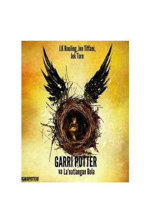

GPGarri Potter haqidagi mashhur pyesaning ikkinchi qismi va uning hayajonli voqealari.
Ushbu asar mashhur sehrgarlar olami haqidagi pyesaning ikkinchi qismi bo'lib, Skorpius va boshqa qahramonlarning muqobil va qorong'u kelajakdagi sarguzashtlarini hikoya qiladi. Voqealar Xogvarts va Sehrgarlik vazirligida kechib, qahramonlarni murakkab tanlovlar qarshisiga qo'yadi.